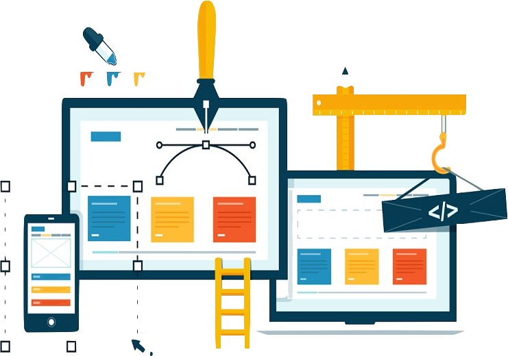

USABILIDAD

1. Facilidad de Aprendizaje
Los usuarios deben poder entender rápidamente cómo usar el sistema sin requerir una curva de aprendizaje extensa.
2. Eficiencia
El sistema debe permitir a los usuarios realizar tareas de manera rápida y con el menor esfuerzo posible.
3. Memorabilidad
Después de usar el sistema, los usuarios deben recordar cómo realizar tareas cuando regresen en el futuro.
4. Errores
El sistema debe minimizar la ocurrencia de errores y proporcionar mensajes claros y útiles si ocurren.
5. Satisfacción del Usuario
La experiencia general del usuario debe ser positiva y satisfactoria.
ACCESIBILIDAD
1. Percepción
Garantizar que la información y los componentes sean presentados de manera clara para personas con diferentes capacidades sensoriales.
2. Operación
Asegurar que todas las funciones y controles sean accesibles para personas con diversas habilidades motoras.
3. Comprensión
Proporcionar contenido y navegación comprensibles para personas con discapacidades cognitivas.
4. Robustez
Garantizar que el contenido sea compatible con diferentes tecnologías y pueda ser interpretado por una variedad de herramientas de asistencia.
NOCIONES BÁSICAS PARA LOS PROFESIONALES

Se refiere a principios fundamentales que los expertos en información, diseñadores de interfaces y profesionales relacionados deben entender y aplicar al desarrollar sitios web o aplicaciones. Estas nociones básicas están destinadas a garantizar que la interfaz de usuario sea clara, coherente y fácil de entender para los usuarios: